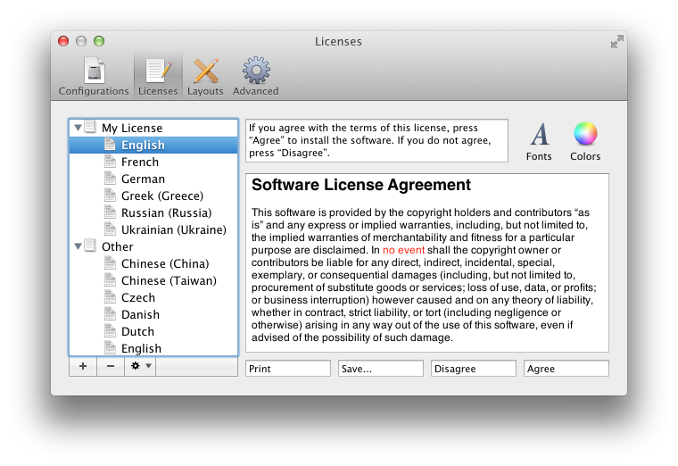
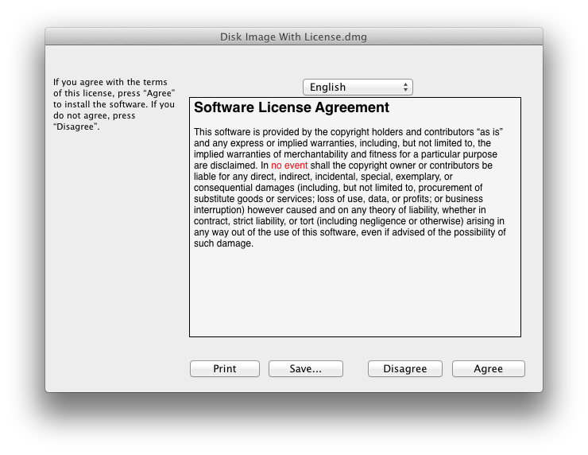

5.2 Licenses
Disk images can include license agreements (also known as End-User License Agreements or EULAs), which are displayed to the user whenever the disk image is mounted. The contents of the disk image will only be accessible if the user accepts the terms of your license. DropDMG lets you define multiple license agreements ahead of time. Each agreement may be localized into multiple languages. You can choose which agreement (if any) to include with each disk image.
See the Making Images With Background Pictures section for a tutorial on creating disk images with license agreements.
Use the + button to create a new license and the - button or the Delete key to remove a license or language. Several commands are available in the action menu and contextual menu:
- New License
- Create a new, empty license.
- Duplicate License
- Create a new license with the same languages as the selected one.
- Rename License
- Change the name of the selected license. You can also click-and-hold on the name or press the Return or Enter key.
- New Language
- Add a language to the selected license. The following languages are available: Arabic, Chinese (China/Simplified), Chinese (Taiwan/Traditional), Czech, Danish, Dutch, English, Finnish, French, German, Greek, Hungarian, Italian, Japanese, Korean, Norwegian, Polish, Portuguese (Brazil), Russian, Slovak, Spanish, Swedish, Turkish, Ukrainian.
A language consists of three elements:
- Prompt
Mac OS X displays these instructions above your license agreement. It is typically something like:
If you agree with the terms of this license, press “Agree” to install the software. If you do not agree, press “Disagree”.
- License Text
This is your localized license agreement. The width of the editor pane matches the width of the pane that Mac OS X uses to display the license to the end user.
The Edit menu contains various helpful commands: Find, Replace, spelling and grammar, etc.
The Font menu and the Fonts and Colors buttons allow you to customize the appearance of your license. License agreements can use multiple fonts, sizes, and styles of text.
You can also edit the license text in another application such as TextEdit. To do this, double-click the language in the source list or drag it onto the TextEdit icon in the Dock. This can be useful if you want to see multiple languages side-by-side in different windows. (When using TextEdit, do not paste in any graphics, as this would convert the file from RTF format to RTFD; DropDMG and disk images only support RTF.)
Note: Beware of using fonts that are not built into Mac OS X, for the license agreement will look different if the user does not have the fonts installed. Secondly, note that “synthetic” font traits will not be preserved. A synthetic trait is a style for which you do not have a font. For instance, Mac OS X ships with normal and bold variants of Lucida. Both of these work fine in license agreements. DropDMG will also let you create a license agreement using italic Lucida, where the operating system synthesizes Lucida Italic from regular Lucida, but the italic style will not be displayed to the end user.
- Buttons
- This lets you customize the names of the Print, Save…, Disagree, and Agree buttons.
DropDMG automatically saves the licenses that you create. You can also create copies of the licenses outside DropDMG, as described in the Sharing Licenses and Layouts section.
Note: Due to limitations of the .dmg format, images containing an extremely large number of files cannot have license agreements.


